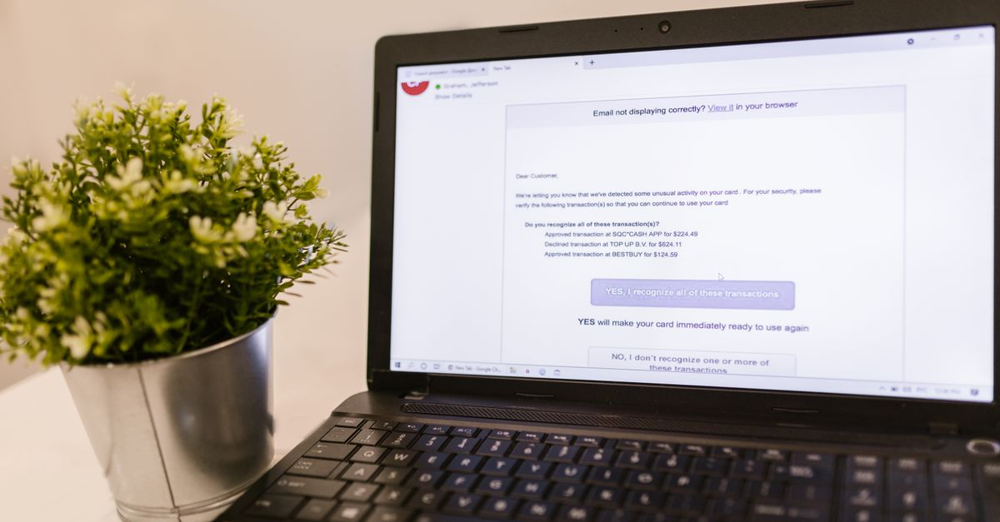

How to Check If a Link or Message Is a Scam
Scam messages are designed to make you act before you think. The defence is simple: slow down, check the sender through a route the message didn't give you, and never let urgency override that check.

Red flags: stop and check if you see these
- Urgency and threats. "Your account will be closed today", "Your parcel will be returned", "You owe a fine — pay now." Pressure is the scammer's main tool.
- Unexpected prizes, refunds, or deliveries for things you never ordered or entered.
- Requests for codes, passwords, or bank details. No legitimate bank, delivery company, or government office asks for these by text, email, or phone call.
- Odd sender details. A message claiming to be from your bank but sent from a personal-looking email address or a random mobile number. Note: sender names can be faked, so a familiar-looking name alone proves nothing.
- Links that don't match the claimed sender. On a computer, hover over a link (don't click) to preview where it really goes. On a phone, long-press a link to preview it — again, without opening it. If the address looks unrelated, misspelled, or uses a strange domain, treat it as suspicious.
- Bad spelling and strange phrasing — not proof on its own, but combined with other flags it's a strong signal.
How to verify safely (without clicking)
- Go direct, not via the link. Type the organisation's official web address yourself, or open its official app, and check for the same alert there. If there's no alert in your account, the message was fake.
- Call the official number. Find it on the organisation's official website or on the back of your card — never use a number printed in the suspicious message itself.
- Check delivery claims with the courier's official tracking page by entering the tracking number yourself, not through the message's link.
- Ask someone you trust if you're unsure — a second pair of eyes defeats most scams, because the pressure tactic works best in isolation.
Special cases
Messages from "friends" asking for money
Accounts get hacked and used to message contacts asking for urgent money. If a friend suddenly asks for cash or gift cards, contact them through a different route (a phone call, another app) before sending anything.
QR codes in unexpected places
A QR code on a flyer, a parking meter, or a random email deserves the same caution as a link. Preview where it leads before opening it, and don't enter payment details on a page you reached from an unverified code.
Job offers and "easy money" messages
Unsolicited offers to earn money by simple tasks, especially ones asking you to pay a fee first or to move money through your account, are a classic scam shape. Legitimate employers don't recruit that way and never ask you to pay to start work.
If you already clicked or shared something
- Don't panic, but act fast. If you entered a password, change it immediately from the real site or app, and change it anywhere else you reused it.
- Contact your bank right away if you entered card or bank details, and ask about blocking the card or reversing payments.
- Report the message — forward spam texts to your carrier's spam-reporting number where available, use the "Report spam/phishing" option in your email or messaging app, and report it to your country's fraud-reporting service.
- Watch your accounts for a few weeks afterwards for unfamiliar transactions.